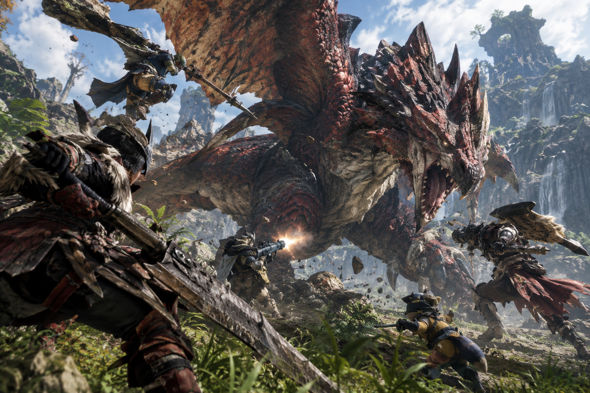
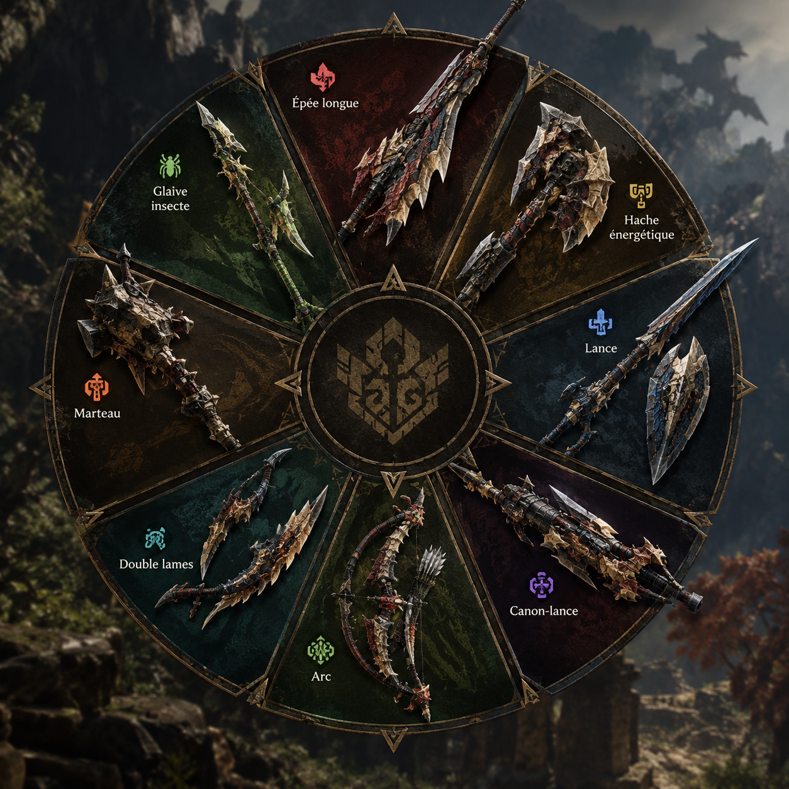
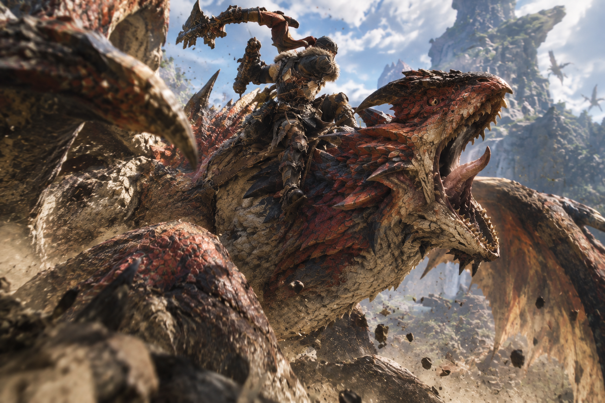
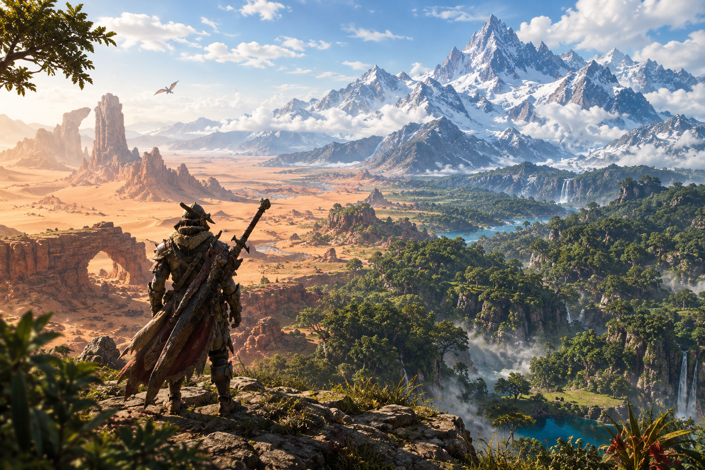

Combattez de monstres terrifiants, dangereux, géants jusqu'à 4 avec vos amis chasseurs. Découvrez un bestiaire méconnu à vos risques et périls
Une météore creuse est tombée, et en son centre résidait une source d'énergie méconnue. Cette énergie venue d'éclats d'étoiles a donné naissance à de terribles monstres. À vous de les traquer.
Chasseur d'Astera est un jeu d'action et de chasse en monde ouvert développé par VoltJV. Seul ou jusqu'à quatre joueurs en coopération, traquez des créatures colossales, étudiez leurs habitudes et forgez votre équipement à partir de leurs restes.
Mais à Astera, chaque chasse a des conséquences : l'écosystème réagit, les espèces migrent, et les éclats d'étoile que vous récoltez changent votre chasseur comme le monde qui l'entoure. La légende raconte que le prochain prodige, la Beryl Star, viendra pour sauver cette nature magique et merveilleuse
Aiguisez vos armes. La saison de chasse est ouverte.
Il y a trois siècles, une roche contenant des fragments d'étoile s'est fracassée sur le continent
d'Astera. Les anciens l'appellent la Grande Chute. L'impact a creusé un cratère de cent lieues, le Cœur Céleste, et
dispersé des millions d'éclats lumineux sur toutes les terres.
Partout où ces éclats sont tombés, la vie a changé. Les bêtes qui les ont absorbés ont grandi,
muté, développé des pouvoirs impossibles : souffles de givre, carapaces de cristal, ailes de foudre. Ainsi sont nés
les Astrides, les monstres d'Astera.
Pour survivre, les peuples d'Astera ont fondé la Guilde de l'Aube, un ordre de chasseurs
chargés d'étudier les Astrides, de protéger les villages et de maintenir l'équilibre entre l'homme et la bête.
Leur devise : « Chasser pour comprendre, comprendre pour préserver. »
Depuis Brise-Haut, une cité bâtie sur les falaises au bord du cratère, la Guilde envoie ses chasseurs vers les
terres sauvages.
Aujourd'hui, le Cœur Céleste s'est rallumé. Une lueur pulse au fond du cratère, et les
Astrides deviennent plus nombreux, plus agressifs, plus étranges. Des espèces que l'on croyait éteintes
réapparaissent. Des migrations bouleversent des écosystèmes entiers.
Vous incarnez un jeune chasseur fraîchement admis dans la Guilde. Votre mission commence par une simple traque.
Elle vous mènera jusqu'au fond du cratère, face à ce qui dort au cœur de l'étoile tombée.

Combattez de monstres terrifiants, dangereux, géants jusqu'à 4 avec vos amis chasseurs. Découvrez un bestiaire méconnu à vos risques et périls

Choisissez une arme parmis les 10 armes disponibles et partez combattre pour améliorer votre équipement et sauver cette nature magnifique.

Chevauchez les monstres pour les faire tomber au sol dans le feu des combats dynamiques. Brisez leur armures et remportez des batailles de force.

Explorez des régions resplendissantes et déjouez les dangers de cette nature inconnue. De nombreuses ressources rares sont prêtes à être découvertes.
| Arme | Style | Particularité |
|---|---|---|
| Lames Jumelles | Rapide et aggressif | Enchainements aériens |
| Grand-fer | Lent et dévastateur | Coups chargés qui peuvent sectionner et trancher |
| Lance-rempart | Défensif | Bonclier et combats de force |
| Fouet-chaîne | Moyenne portée | Agrippe et projette les monstres |
| Marteau tellurique | Contondant | Assome la tête à base de coups lents |
| Arc stellaire | Distance | Flèches chargées en energie d'éclat |
| Arbalète-mortier | Artillerie lourde | Presque immobile, de lourds dégâts grande distance |
| Faux-lunaire | Technique de fauchage | Plus forte la nuit, siphonne la vie |
| Gantelets runiques | Coprs à corps | Peut changer d'élément en fonction de la région |
| Bâton harmonique | Soutien | Renforce et soigne les alliés |
Au cœur de chaque chasse se trouve la Résonance d'Éclat. En frappant un Astride, vous accumulez son énergie. Une fois la jauge pleine, votre chasseur emprunte pendant 30 secondes un pouvoir du monstre : vos attaques gèlent face à une bête de glace, vous esquivez comme l'éclair face à une bête de foudre. Chaque Astride offre une Résonance différente, à vous de les découvrir.
Mais Astera vit sans vous. Chaque région possède son propre équilibre : chassez trop une espèce et ses prédateurs affamés descendront vers les villages, laissez-la proliférer et elle épuisera ses proies. Les migrations, les territoires et même les quêtes évoluent selon vos choix. Le monde n'est jamais deux fois le même.
Les monstres que vous capturez rejoignent le Sanctuaire, une réserve aménagée sous Brise-Haut. Étudiez-les, récoltez les matériaux rares qu'ils produisent, puis relâchez-les dans une région pour rétablir son équilibre.
Vous ne chassez jamais vraiment seul. Votre Lumifaune, un petit être né d'un éclat pur, évolue selon les éclats que vous lui offrez : nourri de feu, il pose des pièges incendiaires ; nourri d'eau, il vous soigne. Il piste les monstres, ramasse des ressources et peut même être contrôlé par un ami en coopération locale.
Le temps lui-même fait partie de la chasse. Astera suit un cycle céleste de jours, de nuits et de saisons : certains Astrides ne sortent qu'à la tombée de la nuit, d'autres hibernent l'hiver. Et lors des rares Pluies d'étoiles, de nouveaux éclats tombent du ciel, faisant apparaître des variantes mutées pour un temps limité.
Ici, aucune flèche magique ne vous guide vers votre cible. Empreintes, griffures, carcasses, cris lointains : apprenez à lire le terrain. Plus vous étudiez une espèce, plus votre carnet de chasse se remplit et plus votre pistage devient précis.
De retour à Brise-Haut, transformez vos trophées en équipement. Chaque monstre offre son propre set d'armure et sa branche d'armes, dont les talents se combinent pour créer votre build. La cité grandit avec vos exploits : la forge s'agrandit, de nouveaux marchands s'installent et la cantine vous prépare des plats qui renforcent votre chasseur avant le départ.
Plus de 30 Astrides peuplent le jeu au lancement. En voici six, des premiers pas jusqu'à la menace finale.
| Astride | Type | Région | Élément | À savoir |
|---|---|---|---|---|
| Grognecaille | Bête cuirassée | Plaines d'Ambrevent | Terre | Premier défi : charge en roulant sur lui-même |
| Sylvarak | Félin des cimes | Forêt de Verdaube | Poison | Chasse en silence depuis les arbres |
| Brumelame | Wyverne marine | Récifs de Nacrelune | Eau | Disparaît dans le brouillard qu'elle crée |
| Pyrocorne | Dragon des forges | Gouffre de Magmarc | Feu | Sa corne s'embrase en rage ; la briser l'affaiblit |
| Solvorax | Dévoreur d'étoiles | Cœur Céleste | Astral | Le gardien de l'éclat originel. Personne n'en est revenu |
| Givrelys | Wyverne de cristal | Pics de Givrenuit | Glace | Fait pousser des lances de glace sur le terrain |
Six régions ouvertes s'étendent en cercle autour du cratère, chacune avec son écosystème, sa faune et ses ressources.
Vos premiers pas se feront dans les Plaines d'Ambrevent, des prairies dorées balayées par le vent, avant de grimper dans la Forêt de Verdaube, une jungle verticale où l'on chasse aussi bien au sol que dans la canopée. Plus loin, les Récifs de Nacrelune dévoilent leurs coraux géants et leurs grottes inondées à chaque marée basse.
Les chasseurs aguerris s'aventurent dans le Gouffre de Magmarc, un canyon volcanique dont les coulées de lave redessinent sans cesse les chemins, ou affrontent les blizzards des Pics de Givrenuit. Et au centre de tout se trouve le Cœur Céleste, le cratère de la Grande Chute, où la gravité elle-même devient instable.
| Information | Détail |
|---|---|
| Titre | Chasseur d'Astera |
| Studio | VoltJV |
| Genre | Action-RPG de chasse, monde ouvert |
| Modes | Solo, coopération en ligne jusqu'à 4 joueurs, coopération locale (Lumifaune) |
| Plateformes | PC, PlayStation 5, Xbox Series X|S |
| Classification | PEGI 12 |
| Langues | Français, anglais, espagnol, allemand, japonais |
| Contenu au lancement | 30+ monstres, 10 types d'armes, 6 régions |
| Prix | 59,99 € (édition standard) |
Faut-il connaître les jeux de chasse pour commencer ?
Non. Les premières heures dans les Plaines d'Ambrevent servent de tutoriel, et la Guilde propose des chasses
d'entraînement.
Peut-on jouer entièrement en solo ?
Oui. Toute l'histoire est faisable seul, avec votre Lumifaune comme allié. La difficulté des monstres s'adapte
au nombre de joueurs.
Y aura-t-il des mises à jour après la sortie ?
Oui. De nouveaux Astrides et des événements de Pluie d'étoiles gratuits sont prévus après le lancement.
Le jeu contient-il des achats intégrés ?
Uniquement des tenues cosmétiques. Aucun équipement ni avantage de combat n'est payant.